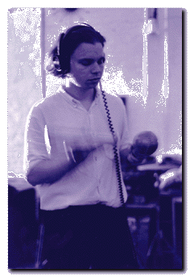

|  | “Crowds got bigger in England, but in the U.S. everything remained low key. We couldn’t find an American label (our only offer was from Slash, and they were telling us we needed a light show), so just before On Fire came out in the U.K. we asked Rough Trade if they would release it in the U.S., too. We ended up signing a worldwide deal with their U.S. office, they said that for accounting reasons it would be easier than signing with the U.K. Later, the American branch of the company went bankrupt, and took all our records (and royalties) down with them... In the fall of 1991, I attended an auction in New York of Rough Trade U.S.’s remaining assets, which included our contracts. They would have gone to the highest bidder, but we placed the only bid. I wrote a check and bought them back on our behalf. Absurd.” -- Damon Krukowski |